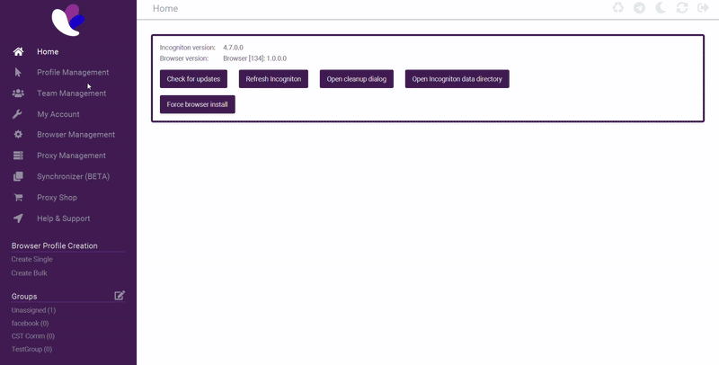
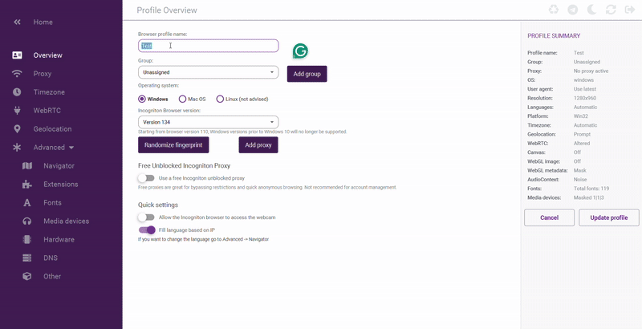
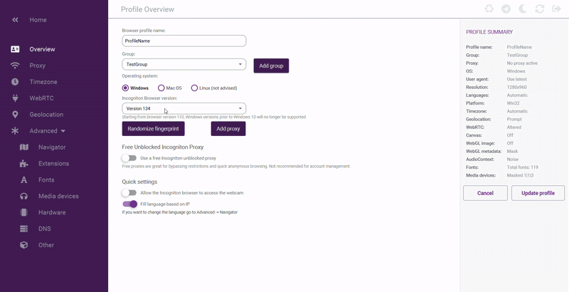
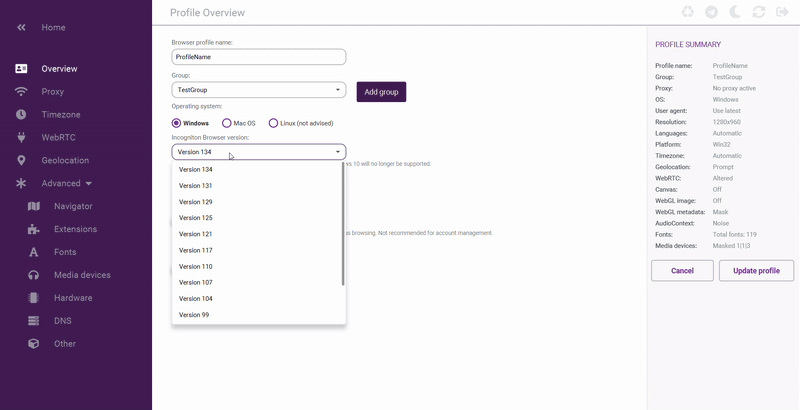
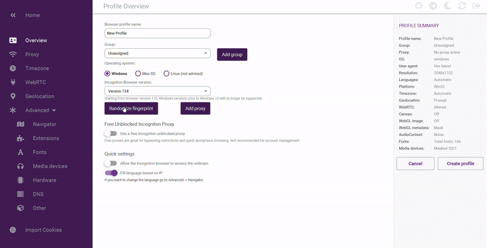
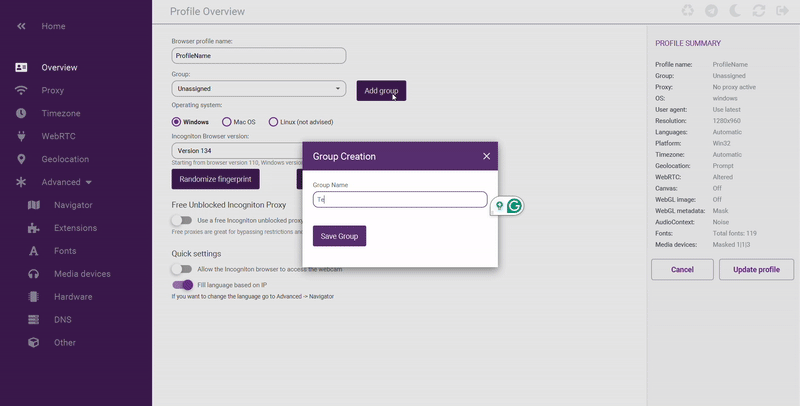
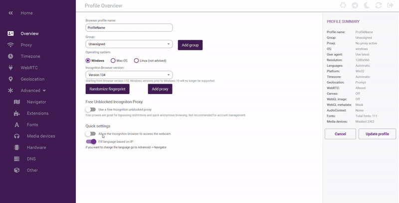
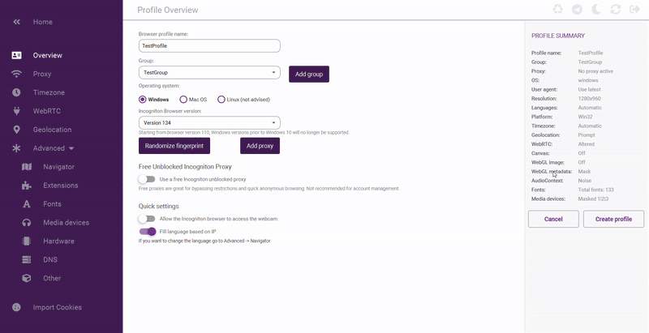

Profile Setup
Overview
Incogniton’s anti-detect browser lets you create profiles to manage your online identities securely. This guide gives you step-by-step instructions to set up a new profile that fits your needs. Make sure you’re logged in and have opened the Profiles tab from the main menu.
Before Creating Your Profile
Before diving in, ensure you have a clear idea of the profile’s purpose. Whether it's for managing multiple social media accounts, testing web applications, or any other activity, having a descriptive profile name and understanding the necessary settings will help you stay organized.
Step 1: Navigate to Profiles
- Click on the Profiles tab from the left menu.
Accessing your Profiles tab provides a centralized location to manage all your online identities, streamlining your workflow.

Step 2: Create a New Profile/
- From the Profiles tab, click on the New Profile button.
Creating a new profile isolates your browsing activities, ensuring each digital identity is secure and organized.

Step 3: Enter a profile name
- Enter a name for your profile
Choose a clear, descriptive name so you can easily recognize and differentiate this profile among others.

Step 4: Set Operating System
- Windows User: Choose the Windows option.
- Mac user: Choose the Mac OS option.
- Linux User: Choose the Linux option (Note: Linux is not the recommended option).
Selecting your operating system ensures your profile is optimized for your device, minimizing compatibility issues.

Step 5: Set Incognition verison
- Click the drop-down menu. It should show the latest version by default.
- If a newer version is available, select it.
Choosing the latest Incogniton version guarantees you benefit from up-to-date security features and performance improvements.

Step 6: Randomize your Footprints
- Click Randomize Footprint to change browser details.
- This makes your digital fingerprint unique and harder to track.
Randomizing your browser fingerprint enhances privacy by making it more difficult for trackers to identify your browsing habits.

Step 7: Create and Select Group
- Click Add Group and enter a group name.
- Choose the group you just created from the drop-down menu. Grouping keeps your profiles organized.
Organizing your profiles into logical groups simplifies managing multiple profiles, especially when using different proxies

Step 8: Extra Settings
- The settings for Free Unblocked Proxy, Allow Camera, and Fill Language are set by default.
- Leave these as they are unless you need to change them.
Reviewing extra settings helps ensure that default configurations match your specific needs, reducing the risk of misconfiguration.

Step 9: Review and Save
- Check all your settings.
- Click Create Profile in the profile summary tab to finish setting up your profile.
A final review of your settings before saving ensures your profile is correctly configured and secure.
